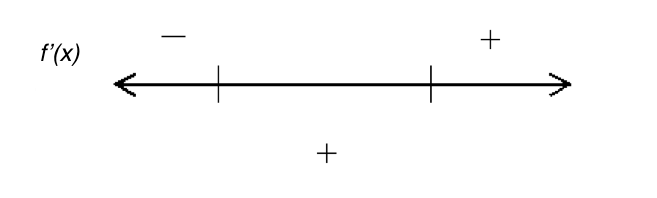
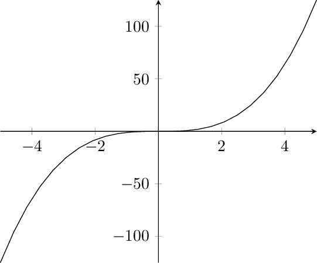

Introduction
-
Dylan
- Using CAS systems to graph is great and all, but on a test where I don’t
have a calculator it’s so hard to sketch a curve!
-
James
- Well maybe we can use derivatives to figure out properties of the graph
so it’s easier to sketch!
-
Dylan
- Oh! We’d be able to see where the graph was heading up or down, plus
we’d be able to see extrema when the derivative at a point is zero!
Guided Problems
Consider the function . Take the derivative and find the values where . Create a
number line, and mark these points. Between them, mark the sign of the
derivative of any point on that interval (Do this by hand). An example is shown
below.

On what interval(s) is the derivative positive?
On what interval(s) is the derivative negative?
Select everything you can always say about the graph of a function at a point where
the derivative is 0:
The graph will be flat at that point. The derivative will change from positive to
negative at the point. The derivative will change from negative to positive at the
point. The derivative will change sign going from one side of the point to the
other.
If the derivative at a point is zero, we can only tell that the graph flattens
out. It is possible that the sign does not change after crossing the point!
-
Julia
- So we have local maxima or minima when the derivative is 0, but what
about the graph of ?

-
Dylan
- Hmmm...I guess that means there are three different kinds of critical
points! Two when the sign changes and one when it stays the same!
-
Julia
- Wait... what’s a critical point?
-
Dylan
- A critical point is any point where the derivative is zero or does not
exist! Because we know it’s important, but we have to check to see what
it means with our number line!
-
James
- You guys are still figuring that out? I’m already determining concavity!
-
Dylan and Julia
- Holy cat fur! What’s concavity?!
-
James
- A graph is concave up when its derivative is increasing, and concave
down when its derivative is decreasing. The easiest way to tell is to look
at the curve and think ‘Would this hold water?’ If it would, it’s concave
up, and if not, it’s concave down!
-
Dylan and Julia
- Wow! Thanks James!
Now determine the second derivative, , of our original function . What happens at
the points where the second derivative is zero?
They show the function is at extrema as well. They indicate that concavity will
remain the same. They indicate that concavity is changing. They show that the
function is at minimum change.
Points where concavity changes are known as inflection points.
Draw another number line, this time for the second derivative, marking where the
derivative equals zero. Evaluate on a point of each of the intervals created through
this marking, and mark the sign. What might this mean in general for changing signs
on each side of an inflection point?
The graph will be flat at that point. The concavity will change from up to down
at the point. The concavity will change from down to up at the point. The
concavity will change in that point, but it is impossible to tell how without knowing
the value of the
second derivative around that point.
Where is the graph concave up?
What about concave down?
Inflection points are given as ordered pairs. Evaluate each inflection point you found
using to determine the ordered pairs, then select them below.
Based on what you’ve done until now, sketch the graph yourself. When you’re done,
click below to see the graph.
I’m Done! Show me the graph!
-
Julia
- Wait but what about the graph of ? at the origin but the graph doesn’t
change concavity see?
-
Dylan
- Oh jeez, does that mean that not every instance of is an inflection
point?
-
James
- Not always! That’s why you have to make another number line for the
second derivative to see if the sign of changes on either side of the point
where .
On Your Own
Now, consider the function
Without graphing the function, complete the following:
Select each type of extrema present on the graph.
Local Maximum Local
Minimum Global Maximum Global Minimum
Indicate the coordinates of any critical points.
(-6,0) (6,0) (3.175, 4) (4,3.175) (1,3) (0,0) (5,0)
Indicate the coordinates of any inflection points.
(-6,0) (6,0) (3.175, 4) (4,3.175) (1,3) (0,0) (5,0)
Select the intervals on which the function is concave up.
Select the intervals on which the function is concave down.
Now, create a sketch of your function on paper. When you’re done, click below to see
how your graph should look!
I’m done waiting! Show me the graph! I’m not ready yet, but I’m going to click
regardless!
Now, consider the function
Without graphing the function, complete the following:
Select each type of extrema present on the graph.
Local Maximum Local
Minimum Global Maximum Global Minimum
Indicate the coordinates of any critical points.
(-2,0) (-1,7) (-3,7) (7,-2) (1,3) (0,5) (5,0)
Indicate the coordinates of any inflection points.
Select the intervals on which the function is concave up.
Select the intervals on which the function is concave down.
Now, create a sketch of your function on paper. When you’re done, click below to see
how your graph should look!
I’m done waiting! Show me the graph! I’m not ready yet, but I’m going to click
regardless!
Matching Graphs
-
Dylan
- So if I wanted to match a graph with the graphs of its first and second
derivative I can do that now!
-
Julia
- Wait, really?? How?
-
James
- Well the value of corresponds to the slope of , and the value of
corresponds to the slope of and is related to the concavity of .
-
Julia
- So we can match the graphs based on how all that information relates!
-
Dylan
- Exactly, let’s try it!
For the following problems, select the correct match of
In Summary
In this lab, you’ve covered quite a bit. To help organize everything, we’ve put the
important theorems below.
We’ve also included the second derivative test, which is another method to determine
if a critical point is a maximum, minimum, or saddle point. To do this, you simply
evaluate the second derivative at the critical point, and determine what that point is
based on the value, as shown in the table.
First Derivative Test Suppose that is a critical number() on a continuous function
.
-
(a)
- If changes from positive to negative at , then has a local maximum at .
-
(b)
- If changes from negative to positive at , then has a local minimum at .
-
(c)
- If does not change sign at , then has a saddle point at .
Concavity Test If exists for all
-
(a)
- If for all , then is concave up on
-
(b)
- If for all , then is concave down on
Test for Inflection Points If or does not exist and changes sign at , then has a point
of inflection at
Second Derivative Test Let be a critical point of . If exists, then
-
(a)
- If , then is a local minimum.
-
(b)
- If , then is a local maximum.
-
(c)
- If , then the test is inconclusive: could be a local max, min, or neither.